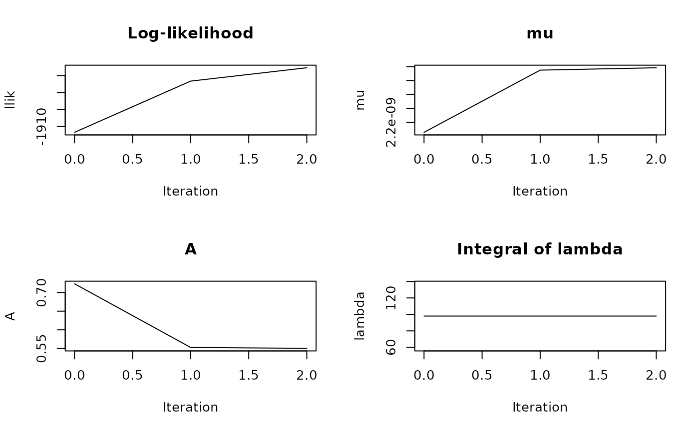

Fit a semi-parametric self-exciting (Hawkes) point process by EM
Source:R/fit_semihawkes.R
fit_semihawkes.RdIt runs Loop 0 (the
parametric/initial-guess step, previously a separate script) followed by
repeated calls to em_step() until convergence, and returns everything
in a single in-memory "semihawkes_fit" object – with an optional
checkpoint_dir for anyone who still wants a per-iteration on-disk
record (e.g. for a long unattended run on a cluster).
Usage
fit_semihawkes(
points,
region,
date_col,
cell_size,
cache_dir,
start_date = NULL,
end_date = NULL,
crs = NULL,
bandwidth_args = list(),
trigger_window_days = 90,
trigger_window_dist = NULL,
trigger_spatial_args = list(),
n_iter = 50,
tol = 0.001,
tol_A = 0.001,
seed = NULL,
nprocs = 1,
checkpoint_dir = NULL,
verbose = TRUE,
exclude_self = TRUE,
restore_rng = TRUE
)Arguments
- points
An
sfPOINT layer of events (seeprepare_events()).- region
An
sfPOLYGON/MULTIPOLYGON study-area boundary.- date_col
Name of the date column in
points.- cell_size
Spatial background grid cell size (required, no default – see
background_spatial()).- cache_dir
Directory for
trigger_spatial_marks()'s per-event cache (required, no default – seetrigger_spatial_marks()).- start_date, end_date, crs
Passed to
prepare_events(). The modelled study period always ends the day after the last event, whateverend_dateis; seeprepare_events().- bandwidth_args
A named list of extra arguments passed to
add_adaptive_bandwidth()(e.g.list(k = 5, min_dist = 150)).- trigger_window_days, trigger_window_dist
Passed to
trigger_pairs().trigger_window_daysdefaults to90.trigger_window_distdefaults toNULL, which uses the reach of the spatial kernel's grid: 1000 linear units (1 km for coordinates in metres) unlesstrigger_spatial_argssets anotherx_range. They cannot reach past the triggering kernels' grids: at most the temporal kernel's 90-day cutoff and the spatial kernel's extent (seetrigger_spatial_args). Choose the spatial reach with care: see Choosing the triggering reach below.- trigger_spatial_args
A named list of extra arguments passed to
trigger_spatial_init(), which builds the grid the spatial triggering kernel is estimated on (e.g.list(x_range = 1500, x_step = 100)). The default grid reaches 1000 linear units from each event. Defaultlist()(the function's own defaults).- n_iter
Maximum number of EM iterations (the original
maxit); default50.- tol
Convergence tolerance on
abs(llik - llik_prev)(the originaltolA); default0.001.- tol_A
Stop early if
Adrops below this (the original'sA < 0.001stopping rule); default0.001.- seed
Optional integer seed for the Monte Carlo edge-correction integral computed by
add_bg_integral(). That integral is stochastic, so two runs with the same data differ slightly unless a seed is fixed here (orset.seed()is called beforehand). DefaultNULL(unseeded).- nprocs
Parallel workers for
trigger_spatial_marks()andtrigger_evaluate(), the slowest steps of a fit: a whole number (the default,1, runs serially),"auto"to choose from the machine, or a cluster fromparallel::makeCluster(), which is used and left running. Workers are started once for the whole fit and stopped at the end."auto"uses one worker per physical core but one (two on a two-core machine), at most 2 whileR CMD checkruns, and runs serially for fewer than 1,000 events, where starting the workers costs more than they save. A number larger than the machine's cores is reduced to the number of cores, with a warning. The workers are socket clusters, which work on Windows, macOS and Linux, and the fit is the same, to the last bit, whatever their number.- checkpoint_dir
Optional directory. If supplied,
em_step()'s full output issaveRDS()-ed there after every iteration (the in-memory-object equivalent of the original's per-loop.RDatadumps), so a crashed/killed long run can be resumed. DefaultNULL(no checkpointing).- verbose
Print progress messages each iteration; default
TRUE.- exclude_self
Passed to
trigger_evaluate()/em_step()for the whole EM run; defaultTRUE. Set toFALSEto reproduce the original script'scalculate_excite()exactly.- restore_rng
Passed to
bg_integral()whenseedis supplied. IfTRUE(the default), the global random-number state is put back afterwards, so the seed affects only the edge-correction integral. IfFALSE, the generator is left in the state the seeded draw produces, as earlier versions of the package did.
Value
A list of class "semihawkes_fit" with elements:
- events
The
semihawkes_eventsobject used throughout.- history
A
data.framewith one row per iteration:iteration,mu,A,llik,lambda_at_all– the in-memory equivalent of the original script'sresults_summarybuilt by re-reading everyLoop/LoopK/Results.RDatafile.- background, trend, weekly, monthly, temporal_trigger, spatial_trigger
The final iteration's fitted components, each with a ready-to-use
$funevaluator.- mu, A, llik, lambda_at_all, lambda_at_events, bgprobs
The final iteration's scalar/vector estimates.
- n_iter
Number of EM iterations actually run.
- stop_reason
"A_below_tol_A","llik_converged", or"max_iter".
Choosing the triggering reach
trigger_window_dist, together with the x_range (and y_range) of the
spatial kernel's grid in trigger_spatial_args, sets how far from an event
the triggering kernel can reach. The default, 1000 linear units (1 km for
coordinates in metres), is a starting point rather than a recommendation
for every dataset, so consider the value carefully. Base it on how far one
event can plausibly trigger another in the process being studied, and
allow a few times that distance:
A reach much wider than that lets the kernel's tail absorb clustering in the background, which overstates the branching ratio
A. On simulated data with offspring a few hundred metres from their parent, a 4 km reach overstatedAby about half.A reach that is too short cuts off genuine triggering, which is then attributed to the background and understates
A.
Refitting with two or three reaches shows how sensitive A is to the
choice. Set the reach through the kernel's grid, for example
trigger_spatial_args = list(x_range = 1500); trigger_window_dist
follows it unless it is set too.
Examples
# \donttest{
# A quick fit to one year of the bundled simulated data: a coarse grid, a
# coarse triggering-kernel grid and two EM iterations keep it to a few
# seconds. Real analyses need finer settings and more iterations.
cache_dir <- tempfile("spHawkes_marks_")
fit <- fit_semihawkes(
sim_events, sim_region,
date_col = "date",
end_date = "2022-01-01",
cell_size = 1000,
cache_dir = cache_dir,
trigger_spatial_args = list(x_range = 2000, x_step = 250),
trigger_window_dist = 2000,
n_iter = 2,
verbose = FALSE,
seed = 1
)
#> The modelled study period ends on 2021-12-29, the day after the last event. `end_date` (2022-01-01) is used only to select events and to label outputs.
fit
#> <semihawkes_fit>
#> 2 iterations (stopped: max_iter)
#> mu = 2.59201e-09, A = 0.550423, llik = -1875.36
#> summary() for the background/triggering decomposition
summary(fit)
#> Semi-parametric spatio-temporal Hawkes fit
#> ------------------------------------------------------------
#> Events : 98
#> Study window : 2021-01-03 to 2022-01-01 (modelled to 2021-12-29, 360 days)
#> CRS : EPSG:32717
#>
#> Parameters
#> mu (baseline rate) : 2.59201e-09 per unit area per day
#> A (branching ratio) : 0.5504 expected offspring per event
#> log-likelihood : -1875.36
#>
#> Branching structure (from fitted background probabilities)
#> background : 57.5 events ( 58.7%)
#> triggered : 40.5 events ( 41.3%)
#>
#> Fitted components (range over their support)
#> trend [ 0.7379, 1.138]
#> weekly [ 0.6428, 1.494]
#> monthly [ 0.5821, 1.274]
#> spatial background [ 0.005398, 5.897]
#> trigger (temporal) [ 0.001207, 0.07197]
#> trigger (spatial) [ 0, 7.789e-07]
#>
#> Convergence
#> 2 EM iterations, reached n_iter without converging
#> final change in log-likelihood: 7.87588
plot(fit, which = "history")

# }